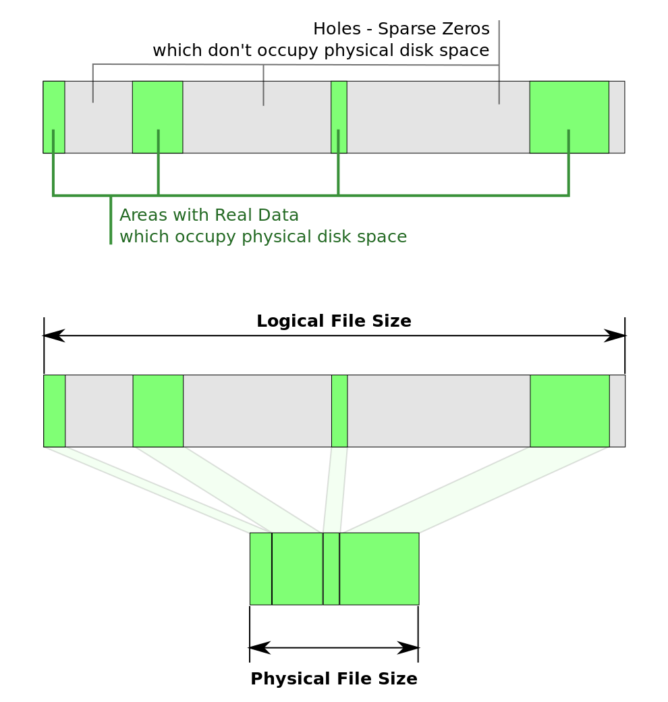

Linux Disk¶
Filesystem¶
Kernnel – VFS¶
Short for Virtual File System, or Virtual Filesystem Switch, maintain tree shaped linux filesystem
- It’s a glue level between storage media and filesystem, let system calls like
open()read()write()don’t need to know to realize it in lower level - Sometimes short for Stackable Filesystem , because it can combine different filesystem seamlessly
- Use command like
mountto manage filesystem
FUSE¶
Filesystem in Userspace(FUSE) is a software interface for Unix-like computer OS, let non priviledged users create their own FS w/o editing kernel code. [1]
- FUSE module provide a “bridge” to the actual kernel interface
- In priciple, any resources available to a FUSE implementation can be explored as a FS
{kind=link}
Driver¶
ls /lib/modules/3.10.0-123.el7.x86_64/kernel/fs/
binfmt_misc.ko dlm fuse mbcache.ko pstore
btrfs exofs gfs2 nfs squashfs
cachefiles ext4 isofs nfs_common udf
cifs fat jbd2 nfsd xfs
cramfs fscache lockd nls
| type | items |
|---|---|
| local | ext2/3/4 |
| network | sambafs/cifs/nfs/sshfs/gmailfs |
| cluster | gfs gfs2 ocfs |
| distributed | HDFS mfs |
mke2fs¶
| option | description | examples |
|---|---|---|
| -t | specify filesys type | mke2fs -t ext4 /dev/sda3 |
| -b blocksize | specify block size | |
| -c | check when creating filesys | |
| -L label | specify volume label | |
| -j | create journal system | ext2 doesn’t contain jornal ext3/4 built-in journal sys |
check fs type¶
df -T # check fs type of all devices
df -T /dev/loop0 # check fs type of specified device
Mount¶
Mount a device¶
mount [-t fstype] [-o mount_opt] device mountpoint
| option | description |
|---|---|
| ro | readonly |
| rw | read and write |
| remount | mount -o remount,ro /dev/sdb1 /mnt/ |
| sync | no use memcache |
| async | default option, use memcache |
| atime | default option, record access time |
| noatime | not record access time |
| acl | enable acl, must enabled if use acl |
| loop | mount iso file |
Unmount a device¶
$ umount testlvm/ -f
umount: /root/testlvm: target is busy.
(In some cases useful info about processes that use
the device is found by lsof(8) or fuser(1))
$ fuser -m testlvm/
/root/testlvm: 24572c
$ ps aux | grep 24572
root 24572 0.0 0.0 117056 3924 pts/0 S+ May28 0:01 -bash
root 210760 0.0 0.0 112644 960 pts/41 S+ 09:44 0:00 grep --color=auto 24572c
$ kill -9 24572
umount testlvm/ # umount object can be device or mount point
Auto Mount¶
configure file
/etc/fstabfile system table:mount -a # take effect fstab
mounted devices will be shown in
/etc/mtab, same as cmdmount
LVM – Logical volume management¶
In computer storage, logical volume management or LVM provides a method of allocating space on mass-storage devices that is more flexible than conventional partitioning schemes. In particular, a volume manager can concatenate, stripe together or otherwise combine partitions (or block devices in general) into larger virtual ones that administrators can re-size or move, potentially without interrupting system use. [2]
- Conf-file –
/etc/lvm/lvm.conf

Management¶
- Create a Logic Volume:
pvcreate–>vgcreate–>lvcreate–>mkfs.ext3–>mount
1 2 3 4 5 | pvcreate /dev/sda5 dev/sda6
vgcreate vg0 /dev/sda5 /dev/sda6
lvcreate -L 800M -n lv0 vg0
mkfs.ext3 /dev/vg0/lv0
mount /dev/vg0/lv0 /mnt``
|
- Delete a Logic Volume:
lvremove–>vgremove–>pvremove
1 2 3 | lvremove lv0
vgremove vg0
pvremove /dev/sda5 dev/sda6
|
- Expand Logic Volume:
lvextend–>resize2fs
1 2 3 | # lvextend -L 1000M /dev/vg0/lv0 # extend to 1G
lvextend -L +400M /dev/vg0/lv0 # extend 400M
resize2fs /mnt
|
- Reduce Logic Volume:
umount–>e2fsck–>resize2fs–>lvreduce
1 2 3 4 | umount /mnt
e2fsck -f /dev/vg0/lv0
resize2fs /dev/vg0/lv0 180M #file system resize to a smaller size
lvreduce -L 1000M /dev/vg0/lv0 #reduce to 1000M
|
- Add PV:
vgextend
1 2 | pvcreate /dev/sda8
vgextend vg0 /dev/sda8
|
- Remove PV:
pvmove
1 2 3 4 | # pvmove /dev/sda6:1-20 /dev/sda7 # will on move pe block 1-20 to sda7
pvmove /dev/sda6 #move PE to out of sda6(PV)
vgreduce vg0 /dev/sda6 #reduce one or more unused PV
pvremove /dev/sda6
|
Check lvm infos¶
1 2 3 4 5 6 7 8 9 10 11 12 13 14 15 16 17 18 19 20 21 22 23 24 25 26 27 28 29 30 31 32 33 34 35 36 37 38 39 40 41 42 43 44 45 46 47 48 49 50 51 52 53 54 55 56 57 58 59 60 61 62 63 64 65 66 67 68 69 70 71 72 73 74 75 76 77 78 79 80 81 82 83 84 85 86 87 88 89 90 91 92 93 94 95 96 97 | # pvs
PV VG Fmt Attr PSize PFree
/dev/loop1 stack-volumes-default lvm2 a-- 10.01g 10.01g
/dev/loop2 stack-volumes-lvmdriver-1 lvm2 a-- 10.01g 8.00m
# vgs
VG #PV #LV #SN Attr VSize VFree
stack-volumes-default 1 0 0 wz--n- 10.01g 10.01g
stack-volumes-lvmdriver-1 1 1 0 wz--n- 10.01g 8.00m
# lvs
LV VG Attr LSize Pool Origin Data% Meta% Move Log Cpy%Sync Convert
volume-c86ee1fc-0881-4b85-aa8a-432f8ad1c9cb stack-volumes-lvmdriver-1 -wi-ao---- 10.00g
# pvdisplay
--- Physical volume ---
PV Name /dev/loop1
VG Name stack-volumes-default
PV Size 10.01 GiB / not usable 2.00 MiB
Allocatable yes
PE Size 4.00 MiB
Total PE 2562
Free PE 2562
Allocated PE 0
PV UUID dohGEH-212L-10Nb-wiWQ-mjZ4-ApKS-AchT26
--- Physical volume ---
PV Name /dev/loop2
VG Name stack-volumes-lvmdriver-1
PV Size 10.01 GiB / not usable 2.00 MiB
Allocatable yes
PE Size 4.00 MiB
Total PE 2562
Free PE 2
Allocated PE 2560
PV UUID UdQnN2-ddmJ-w3az-Gzp3-b7pf-tIFS-IB8Pho
# vgdisplay
--- Volume group ---
VG Name stack-volumes-default
System ID
Format lvm2
Metadata Areas 1
Metadata Sequence No 1
VG Access read/write
VG Status resizable
MAX LV 0
Cur LV 0
Open LV 0
Max PV 0
Cur PV 1
Act PV 1
VG Size 10.01 GiB
PE Size 4.00 MiB
Total PE 2562
Alloc PE / Size 0 / 0
Free PE / Size 2562 / 10.01 GiB
VG UUID VWeopN-dnmk-W6Gg-byZE-JwRw-hndS-9xa5LU
--- Volume group ---
VG Name stack-volumes-lvmdriver-1
System ID
Format lvm2
Metadata Areas 1
Metadata Sequence No 2
VG Access read/write
VG Status resizable
MAX LV 0
Cur LV 1
Open LV 1
Max PV 0
Cur PV 1
Act PV 1
VG Size 10.01 GiB
PE Size 4.00 MiB
Total PE 2562
Alloc PE / Size 2560 / 10.00 GiB
Free PE / Size 2 / 8.00 MiB
VG UUID 5TTHgC-LXzV-7i9u-YXnG-KQTY-HXmD-SFocsq
# lvdisplay
--- Logical volume ---
LV Path /dev/stack-volumes-lvmdriver-1/volume-c86ee1fc-0881-4b85-aa8a-432f8ad1c9cb
LV Name volume-c86ee1fc-0881-4b85-aa8a-432f8ad1c9cb
VG Name stack-volumes-lvmdriver-1
LV UUID KSvISz-D19i-13Ra-ZCVj-tkSa-dco6-uX7PJ2
LV Write Access read/write
LV Creation host, time r16s12, 2015-05-28 16:35:27 +0800
LV Status available
open 1
LV Size 10.00 GiB
Current LE 2560
Segments 1
Allocation inherit
Read ahead sectors auto
- currently set to 256
Block device 253:0
|
Issues¶
- remove vg after pv been removed
$sudo vgremove r16s03-default
Incorrect metadata area header checksum on /dev/loop1 at offset 4096
vg_remove_mdas r16s03-default failed
$ sudo vgremove r16s03-default --force
/dev/loop1: lseek 4096 failed: Invalid argument
vg_remove_mdas r16s03-default failed
sudo pvremove /dev/loop1 -ff
- lvremove: Logical volume in use
$ sudo lvremove /dev/r16s11-lvmdriver-1/volume-daffbf30-30b9-4da3-9d34-de1c658ee38c
Logical volume r16s11-lvmdriver-1/volume-daffbf30-30b9-4da3-9d34-de1c658ee38c in use.
$ sudo fuser /dev/r16s11-lvmdriver-1/volume-daffbf30-30b9-4da3-9d34-de1c658ee38c
/dev/dm-0: 159892
$ sudo kill -9 159892
$ sudo umount /dev/r16s11-lvmdriver-1/volume-daffbf30-30b9-4da3-9d34-de1c658ee38c
- Disk is apparently in use by the system
# mkfs.ext3 /dev/sdb1
mke2fs 1.39 (29-May-2006)
/dev/sdb1 is apparently in use by the system; will not make a filesystem here!
- Solution: remove the disk
# dmsetup — low level logical volume management
dmsetup remove /dev/sdb1
DeviceMapper¶
Loop Device¶
In Unix-like operating systems, a loop device, vnd (vnode disk), or lofi (loop file interface) is a pseudo-device that makes a file accessible as a block device. [3]
Sparse File¶
{kind=link}
Sparse file is a type of computer file that attempts to use file system space more efficiently when blocks allocated to the file are mostly empty. [4]
This is achieved by writing brief information (metadata) representing the empty blocks to disk instead of the actual “empty” space which makes up the block, using less disk space. When reading sparse files, the file system transparently converts metadata representing empty blocks into “real” blocks filled with zero bytes at runtime. The application is unaware of this conversion.
$ truncate -s 512M file1.img # notice 512M not same as 512MB
$ dd if=/dev/zero of=file2.img bs=1 count=0 seek=512M
0+0 records in
0+0 records out
0 bytes (0 B) copied, 0.000173649 s, 0.0 kB/s
$ du -h file* # real size
0 file1.img
0 file2.img
$ du -h --apparent-size file*
512M file1.img
512M file2.img
$ ll -h file*
-rw-r--r-- 1 root root 512M Jul 23 15:15 file1.img
-rw-r--r-- 1 root root 512M Jul 23 15:15 file2.img
copying w/ ‘cp’¶
Normally, ‘cp’ is good at detecting whether a file is sparse.
Some cp implementations, like FreeBSD’s cp, do not support the --sparse option and will always expand sparse files
# will create sparse file if src file is in sparse state
cp file.img new_file.img
# usful if a file containing long zero blocks is saved in a non-sparse way (will saving space)
cp --sparse=always new_file.img recovered_file.img
Archiving w/ ‘tar’¶
# tar -Scf file.tar file.img # w/o '-S', it will be 512M
# du -h file.tar
12K file.tar
Mount sparse file¶
It can be either mounted as a loop device, or pretend to be an loop device.
# mkfs.reiserfs -f -q file.img
mkfs.reiserfs 3.6.21 (2009 www.namesys.com)
# du -h file.img
33M file.img
# du -h --apparent-size file.img
512M file.img
# mkdir folder
# mount -o loop file.img folder
Create Loop Device¶
- Setup loop device:
losetup [-o offset] [--sizelimit size] [-p pfd] [-rP] {-f[--show]|loopdev} file -showwill print device name
- Setup loop device:
# Get infos
# ---------
losetup loopdev # show specified loopdev
losetup -l [-a] # show loopdev list
losetup -j file [-o offset]
losetup -f # Print first unused loop device
# management
# ----------
losetup <sparsefile> /dev/loop{num} # create a loop device
losetup -d loopdev... # Delete loop
losetup -D # Delete all used loop devices
losetup -c loopdev # Resize loop device
RAID¶
raid10¶

Also called raid1+0, build raid1 first then use two raid 1 to build a raid0. different from raid 01.
Erasure Coding¶
Erasure Coding is a method of data protection in which data is broken into fragements that are expanded and encoded w/ a configurable number of redundant pieces and stored accross different locations. eg. disks, storage nodes or geographical locations [5]
- goal is to reconstruct corrupted by using infos about that data stored elsewhere.
- works by creating a mathematical func to describe a set of numbers that they can be checked for accuracy and recovered if one is lost.
- first used in CDs and DVDs, allows a player to calculate the correct information even though part of dice’s surface may be obsecured.
- allows for the failure of two or more elements of a storage array.
Disk Performance¶
dd – convert and copy a file¶
The dd utility copies the standard input to the standard output. Input data is read and written in 512-byte blocks. If input reads are short, input from multiple reads are aggregated to form the output block. When finished, dd displays the number of complete and partial input and output blocks and truncated input records to the standard error output.
| Option | description |
|---|---|
| bs=BYTES | read and write up to BYTES bytes at a time |
| count=N | copy only N input blocks |
dd if=/dev/zero of=testfile bs=1M count=512 conv=fdatasync
iozone¶
dd if=/dev/zero of=testfile bs=1M count=8192
iozone -a -e -n 2g -g 8g -r 64k -i 0 -i 1 -i 2 -i 5 -f testfile -Rb ./iozone.xls
References¶
| [1] | https://en.wikipedia.org/wiki/Filesystem_in_Userspace |
| [2] | http://en.wikipedia.org/wiki/Logical_volume_management |
| [3] | http://en.wikipedia.org/wiki/Loop_device |
| [4] | https://wiki.archlinux.org/index.php/Sparse_file |
| [5] | http://www.computerweekly.com/feature/Erasure-coding-versus-RAID-as-a-data-protection-method |